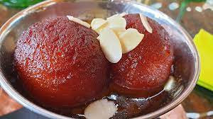

Gulab Jamun

Description
Gulab Jamun is a traditional Indian dessert that is loved by many. The
dish consists of small round balls that are fried and then soaked in a
sweet syrup flavored with cardamom, saffron, and rose water. The recipe
for Gulab Jamun is relatively simple and requires only a few ingredients.
To make Gulab Jamun, you will need milk powder, all-purpose flour, baking
powder, ghee (clarified butter), milk, and sugar. First, mix together the
milk powder, flour, and baking powder to make a dough. Add the ghee and
milk, and knead the dough until it becomes soft and smooth. Let the dough
rest for 10-15 minutes.
Next, shape the dough into small balls and fry them in hot oil until they
turn golden brown. Meanwhile, prepare the sugar syrup by heating sugar and
water in a pot until it reaches a one-string consistency. Add cardamom,
saffron, and rose water to the syrup for flavor. Once the balls are fried,
add them to the hot syrup and let them soak for at least 30 minutes. The
longer they soak, the more syrupy and delicious they become. Serve Gulab
Jamun warm or at room temperature for a sweet and satisfying dessert.
Ingredients
- 1 cup milk powder
- 1/4 cup all-purpose flour
- 1/4 teaspoon baking powder
- 2 tablespoons ghee (clarified butter)
- 3-4 tablespoons milk
- Oil, for frying
Steps
-
In a mixing bowl, combine milk powder, all-purpose flour, and baking
powder. Mix well.
-
Add ghee to the mixture and mix with your fingertips until it resembles
breadcrumbs.
-
Add milk, a tablespoon at a time, and knead the mixture into a smooth
and soft dough. Cover the dough and let it rest for 10-15 minutes.
- In a deep frying pan or kadhai, heat oil over medium heat.
-
While the oil is heating, prepare the sugar syrup. In a saucepan, mix
sugar and water and bring to a boil. Add crushed cardamom pods, saffron
(if using), and rose water. Let the syrup simmer on low heat until it
reaches a one-string consistency. Turn off the heat and keep the syrup
warm.
-
Divide the dough into equal parts and shape them into smooth balls
without any cracks.
-
Once the oil is hot, reduce the heat to low. Carefully add the balls to
the oil and fry them on low heat until they turn golden brown. Stir the
balls occasionally to ensure they cook evenly.
-
Using a slotted spoon, remove the fried balls from the oil and drain
excess oil by placing them on a kitchen towel.
-
Immediately add the fried balls to the warm sugar syrup. Gently stir to
coat the balls with the syrup. Let the balls soak in the syrup for at
least 30 minutes to an hour. The longer they soak, the more syrupy they
become.
-
Serve Gulab Jamun warm or at room temperature, garnished with chopped
pistachios or almonds (optional).